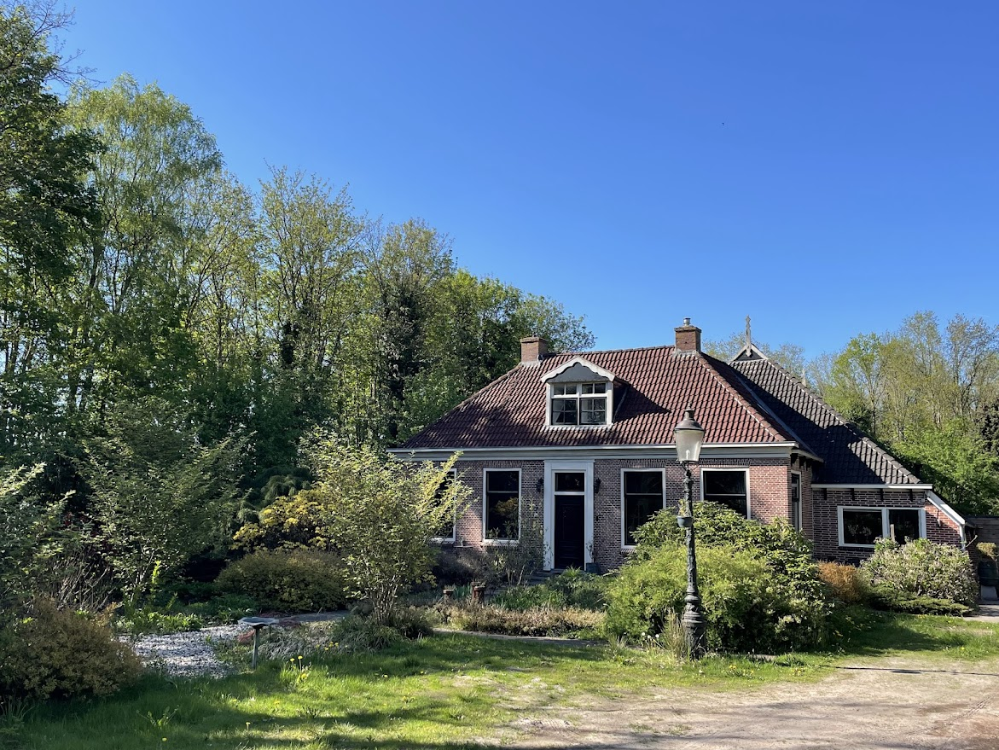
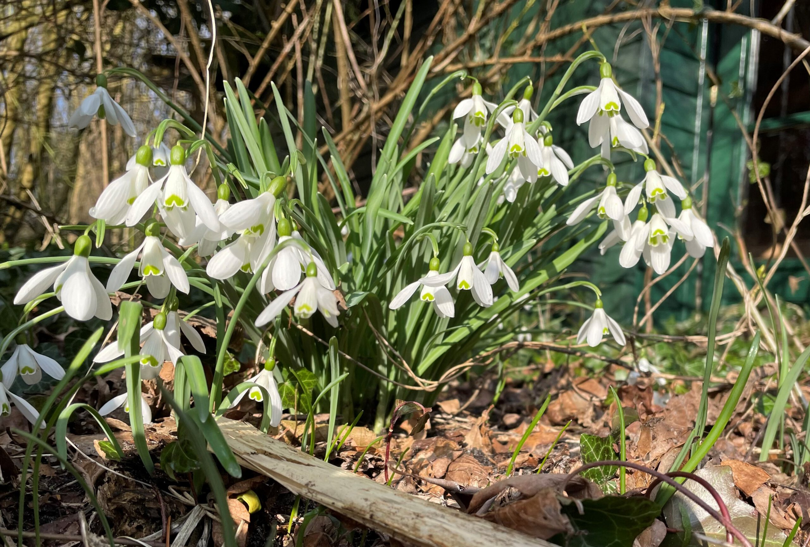
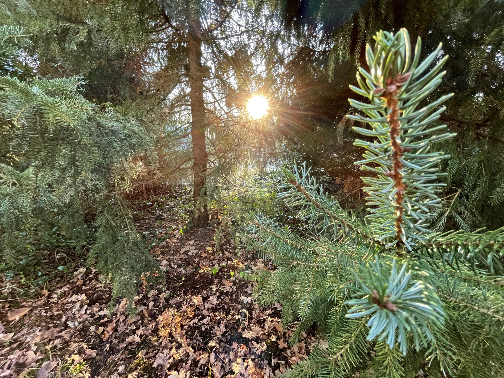
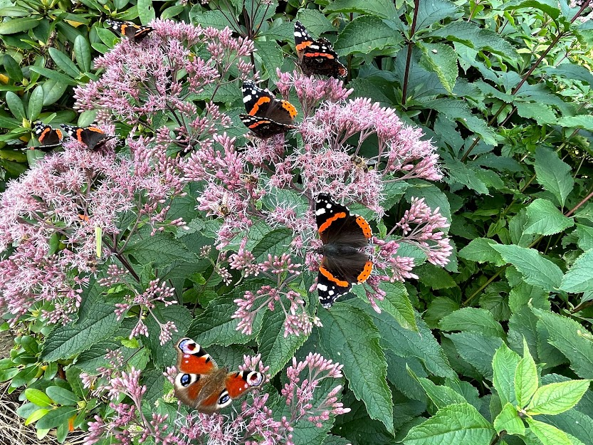
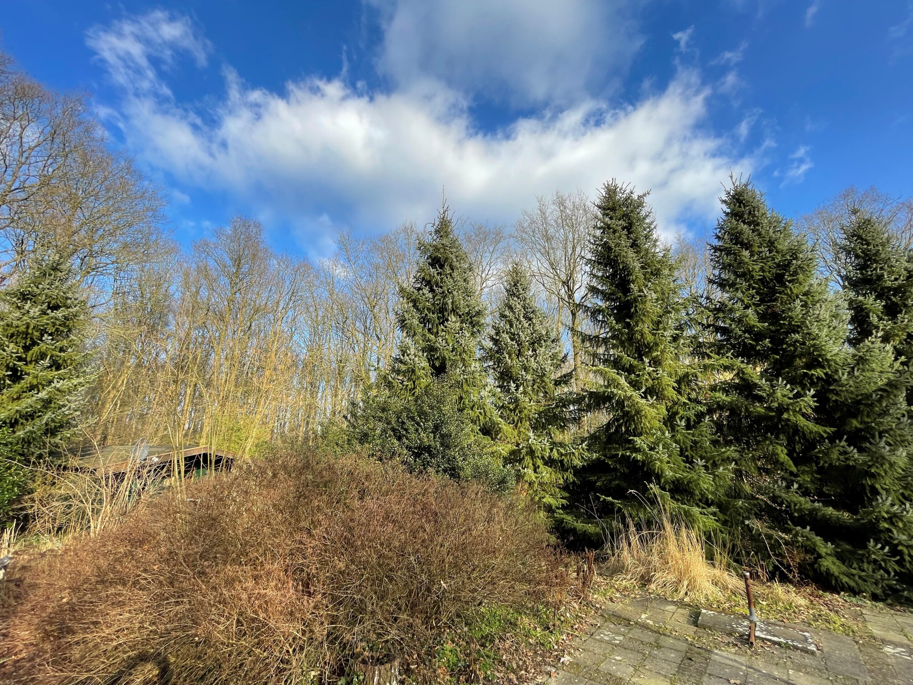
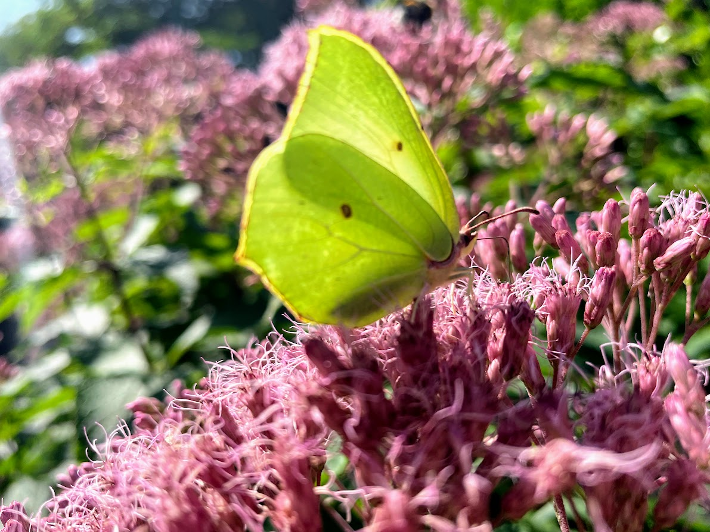
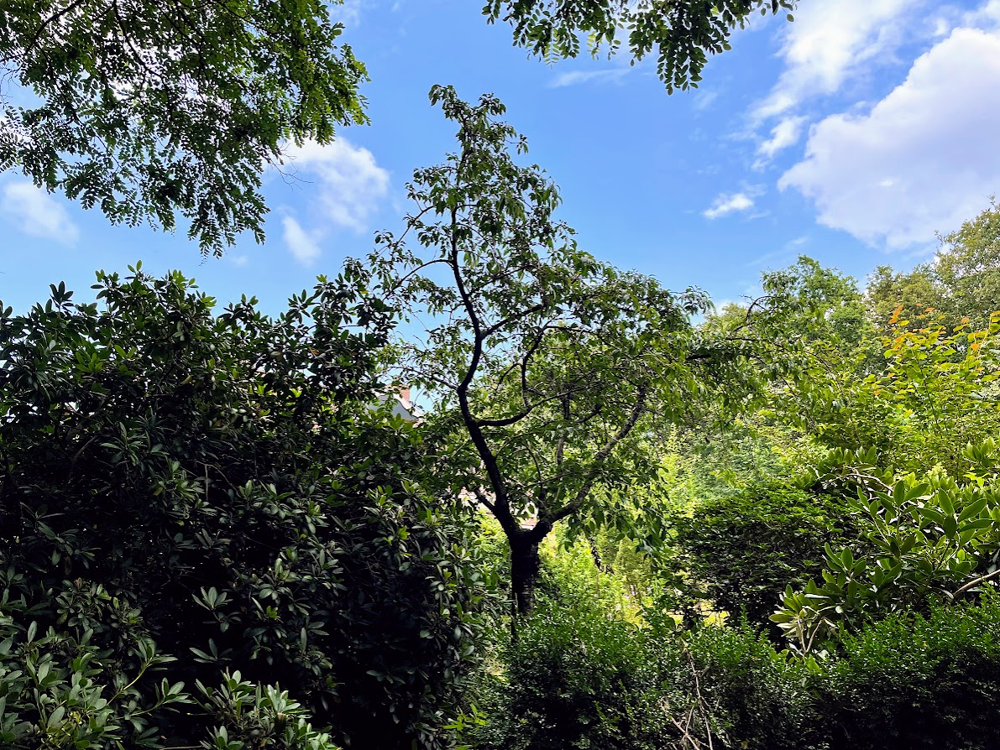
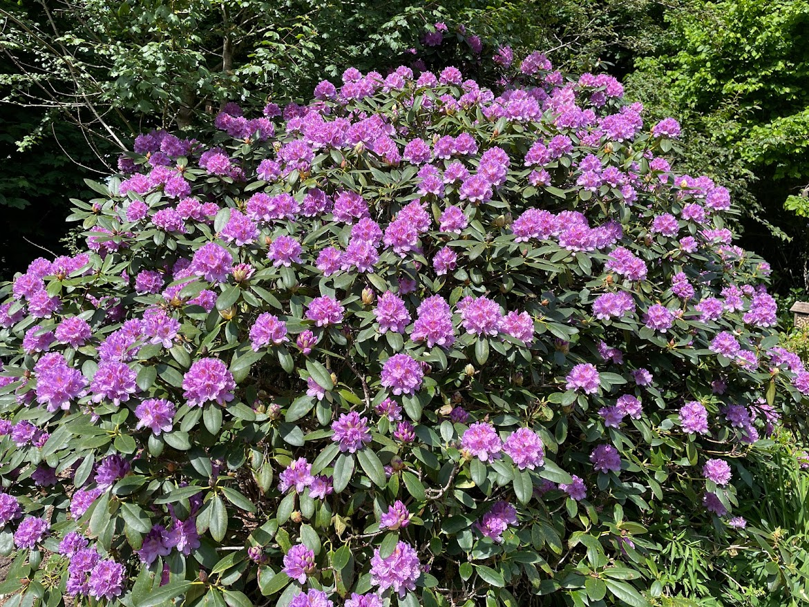
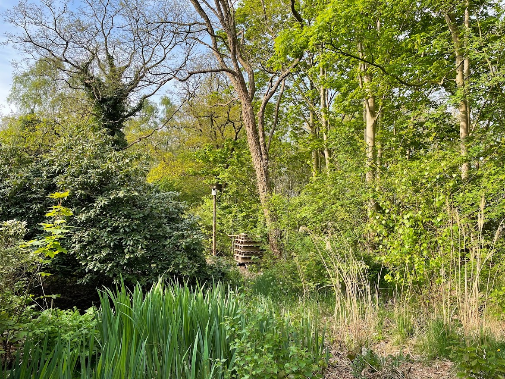

Tsjerkepaed 13 · Hoornsterzwaag · Friesland
D'Alde Pastorije ligt in het kleine Friese dorp Hoornsterzwaag, verscholen aan de rand van de bossen van Staatsbosbeheer. De combinatie van rust, ruimte en natuur maakt dit een bijzondere plek.
Het adres is Tsjerkepaed 13, 8412 ST Hoornsterzwaag. Gebruik dit adres in Google Maps of je navigatiesysteem.
📍Tsjerkepaed 13, 8412 ST Hoornsterzwaag
🚗Goed bereikbaar per auto, parkeren op eigen terrein
🌲Direct grenzend aan de bossen van Staatsbosbeheer
🚲Ideaal voor wandelaars en fietsers — Wanderl- en fietspaden voor de deur

Hoornsterzwaag ligt centraal in Friesland, goed bereikbaar vanuit heel Nederland.
Reistijden zijn indicatief per auto, afhankelijk van verkeer.








Klik op een foto om te vergroten